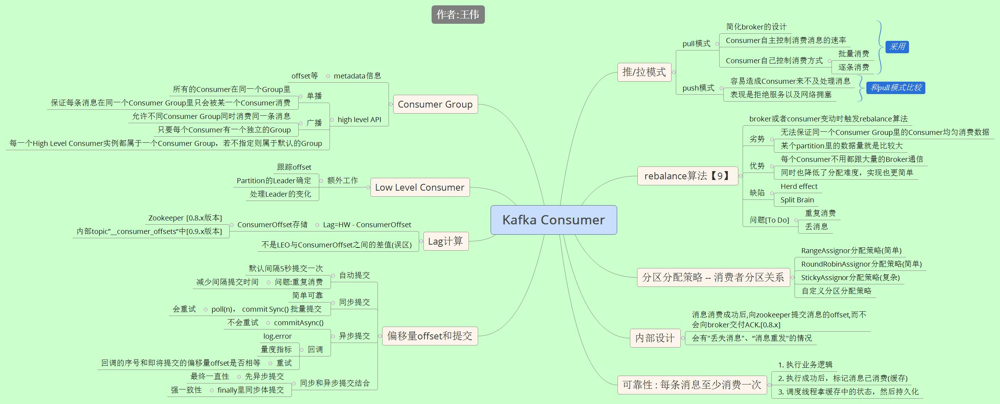

Kafka 消费者总结

参考:
1. Kafka设计解析（四）：Kafka Consumer解析 郭俊
2. Kafka分区分配策略（1）——RangeAssignor 朱小厮
3. Kafka分区分配策略（2）——RoundRobinAssignor和StickyAssignor 朱小厮
4. Kafka分区分配策略（3）——自定义分区分配策略 朱小厮
5. Kafka的Lag计算误区及正确实现 朱小厮
6. <<kafka权威指南>> 薛命灯 第3，4 ，5章